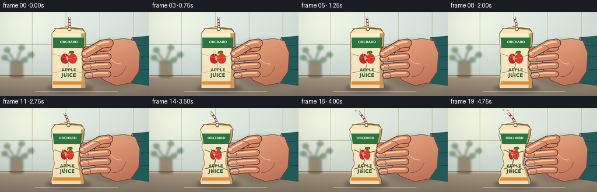
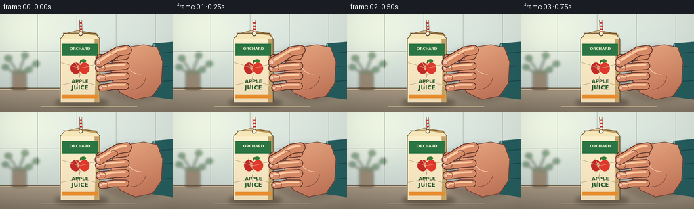

CODING AGENTS AS PIXEL WORLD MODELS
traex/GPT-5.6-Sol · mechanics_0019
点击播放 · 原生 RGB 像素
逐轮保存的候选
回放视频、检查图与代码变化。
每份候选均可单独播放。实际图片检查记录在下方工具轨迹中。
候选 01播放与检查图
点击播放 · 原生 RGB 像素


展开代码变化
--- 上一保存版本
+++ 本次保存版本
@@ -0,0 +1,309 @@
+from pathlib import Path
+import math
+import json
+import numpy as np
+from PIL import Image, ImageDraw, ImageFont, ImageFilter
+import artifact_io
+
+CASE_DIR = Path(__file__).resolve().parent
+SPEC = json.loads((CASE_DIR / 'task_spec.json').read_text())
+W, H, N = SPEC['width'], SPEC['height'], SPEC['frames']
+S = 4
+WW, HH = W*S, H*S
+rng = np.random.default_rng(19019)
+
+def sc(v): return int(round(v*S))
+def pts(seq): return [(sc(x),sc(y)) for x,y in seq]
+def smoothstep(x): return x*x*(3-2*x)
+
+def font(size, bold=False):
+ names = ['/usr/share/fonts/truetype/dejavu/DejaVuSans-Bold.ttf' if bold else '/usr/share/fonts/truetype/dejavu/DejaVuSans.ttf']
+ for n in names:
+ try: return ImageFont.truetype(n, sc(size))
+ except OSError: pass
+ return ImageFont.load_default()
+
+def gradient_fill(base, mask, top, bottom, xlight=0.0):
+ """Composite a softly lit vertical color gradient through mask."""
+ arr = np.zeros((HH, WW, 4), dtype=np.uint8)
+ yy = np.linspace(0,1,HH)[:,None]
+ xx = np.linspace(-1,1,WW)[None,:]
+ for c in range(3):
+ val = top[c]*(1-yy) + bottom[c]*yy + xlight*(1-np.abs(xx))*255
+ arr[:,:,c] = np.clip(val,0,255).astype(np.uint8)
+ arr[:,:,3] = np.asarray(mask)
+ return Image.alpha_composite(base, Image.fromarray(arr,'RGBA'))
+
+def cubic(p0,p1,p2,p3,n=18):
+ out=[]
+ for t in np.linspace(0,1,n):
+ q=(1-t)**3*np.array(p0)+3*(1-t)**2*t*np.array(p1)+3*(1-t)*t*t*np.array(p2)+t**3*np.array(p3)
+ out.append(tuple(q))
+ return out
+
+def background():
+ # Airy tiled kitchen with warm side-light; deliberately quiet so the action reads.
+ y=np.arange(HH)[:,None]
+ x=np.arange(WW)[None,:]
+ wall=np.zeros((HH,WW,3),dtype=np.float32)
+ horizon=sc(109)
+ t=np.minimum(y/horizon,1)
+ wall[:,:,0]=226-31*t
+ wall[:,:,1]=239-29*t
+ wall[:,:,2]=233-26*t
+ # warm sun pool from the upper left
+ glow=np.exp(-(((x-sc(32))/sc(72))**2+((y-sc(24))/sc(55))**2))
+ wall += glow[:,:,None]*np.array([24,20,8])[None,None,:]
+ # stone counter
+ ct=np.clip((y-horizon)/max(sc(35),1),0,1)
+ counter=np.empty_like(wall)
+ counter[:,:,0]=164-38*ct
+ counter[:,:,1]=151-35*ct
+ counter[:,:,2]=132-31*ct
+ wall=np.where((y>=horizon)[:,:,None],counter,wall)
+ grain=rng.normal(0,1.25,(HH,WW,1))
+ wall=np.clip(wall+grain,0,255).astype(np.uint8)
+ im=Image.fromarray(wall,'RGB').convert('RGBA')
+ d=ImageDraw.Draw(im,'RGBA')
+ # tile grout
+ for tx in [55,113,171,229]:
+ d.line((sc(tx),0,sc(tx),sc(109)),fill=(115,150,145,31),width=sc(.55))
+ d.line((sc(tx+0.6),0,sc(tx+0.6),sc(109)),fill=(255,255,255,55),width=sc(.35))
+ for ty in [55,108]:
+ d.line((0,sc(ty),WW,sc(ty)),fill=(112,143,139,34),width=sc(.55))
+ d.line((0,sc(109),WW,sc(109)),fill=(81,72,60,75),width=sc(1))
+ d.line((0,sc(111),WW,sc(111)),fill=(255,244,214,35),width=sc(.7))
+ # blurred kitchen props: plant left, bottle at rear right
+ prop=Image.new('RGBA',(WW,HH),(0,0,0,0)); p=ImageDraw.Draw(prop,'RGBA')
+ p.rounded_rectangle((sc(18),sc(83),sc(39),sc(111)),radius=sc(3),fill=(112,78,51,150))
+ for a,b,c,e in [(28,88,12,65),(27,88,37,61),(30,89,53,73),(24,89,8,78),(31,89,42,82)]:
+ p.line(pts([(a,b),(c,e)]),fill=(46,101,59,170),width=sc(2))
+ p.ellipse((sc(c-5),sc(e-4),sc(c+5),sc(e+4)),fill=(55,124,68,155))
+ p.rounded_rectangle((sc(217),sc(69),sc(235),sc(110)),radius=sc(4),fill=(111,151,145,90))
+ p.rectangle((sc(221),sc(61),sc(231),sc(73)),fill=(74,102,98,85))
+ prop=prop.filter(ImageFilter.GaussianBlur(sc(2.0)))
+ im=Image.alpha_composite(im,prop)
+ return im
+
+BASE=background()
+
+def shadow_ellipse(im, box, color, blur):
+ sh=Image.new('RGBA',(WW,HH),(0,0,0,0)); d=ImageDraw.Draw(sh)
+ d.ellipse(tuple(sc(v) for v in box),fill=color)
+ sh=sh.filter(ImageFilter.GaussianBlur(sc(blur)))
+ return Image.alpha_composite(im,sh)
+
+def carton_geom(p):
+ cx=118-3.0*p; top=36; bot=130
+ def width(v):
+ # pressure is concentrated in the hand's middle; base and sealed top resist it
+ waist=math.exp(-((v-.57)/.26)**2)
+ shoulder=math.exp(-((v-.20)/.17)**2)
+ return 58 - p*(22*waist + 6*shoulder) - 2*p*v
+ def center(v):
+ return cx - 2.0*p*math.exp(-((v-.56)/.31)**2)
+ def lr(v):
+ w=width(v); c=center(v)
+ # wrinkling creates subtly irregular edges under high pressure
+ wig=p*1.2*math.sin(v*10*math.pi+0.4)
+ return c-w/2+wig, c+w/2-.5*wig
+ return top,bot,lr
+
+def add_back_hand(im,p):
+ # cast shadow behind the approaching hand
+ im=shadow_ellipse(im,(135-4*p,48,263,128),(56,31,22,62),4.5)
+ # teal rolled sleeve at right
+ d=ImageDraw.Draw(im,'RGBA')
+ cuff=[(226,43),(260,40),(260,127),(224,122),(216,107),(219,67)]
+ d.polygon(pts(cuff),fill=(38,93,94,255))
+ d.line(pts([(227,44),(222,121)]),fill=(124,184,173,140),width=sc(1.4))
+ for yy in [58,78,100]:
+ d.line(pts([(226,yy),(257,yy-2)]),fill=(20,62,66,70),width=sc(1))
+ # palm/back of hand, moving left as grip tightens
+ q=6*p
+ outline=[(232,49),(212,45),(193-q*.35,48),(180-q*.75,53),(169-q,62),
+ (163-q,76),(165-q,98),(177-q*.7,116),(199,126),(225,121),(238,102),(240,70)]
+ mask=Image.new('L',(WW,HH),0); md=ImageDraw.Draw(mask)
+ md.polygon(pts(outline),fill=255)
+ # smooth a little but preserve contour
+ mask=mask.filter(ImageFilter.GaussianBlur(sc(.45)))
+ im=gradient_fill(im,mask,(239,177,135),(181,102,76),xlight=.055)
+ pd=ImageDraw.Draw(im,'RGBA')
+ pd.line(pts(outline+[outline[0]]),fill=(105,57,48,150),width=sc(1.0),joint='curve')
+ # palm creases visible beside the carton
+ pd.arc((sc(174-q),sc(66),sc(216),sc(111)),10,92,fill=(129,72,60,80),width=sc(.7))
+ pd.arc((sc(187),sc(51),sc(226),sc(89)),86,181,fill=(255,219,184,80),width=sc(.7))
+ return im
+
+def draw_carton(im,p,frame):
+ top,bot,lr=carton_geom(p)
+ # contact shadow on counter
+ l0,r0=lr(.98)
+ im=shadow_ellipse(im,(l0-8,124,r0+13,137),(47,34,24,105),3.2)
+ vlist=np.linspace(0,1,45)
+ left=[(lr(v)[0],top+(bot-top)*v) for v in vlist]
+ right=[(lr(v)[1],top+(bot-top)*v) for v in vlist[::-1]]
+ poly=left+right
+ mask=Image.new('L',(WW,HH),0); md=ImageDraw.Draw(mask); md.polygon(pts(poly),fill=255)
+ # carton paper gradient
+ arr=np.zeros((HH,WW,4),dtype=np.uint8)
+ yy=np.linspace(0,1,HH)[:,None]
+ xx=np.linspace(0,1,WW)[None,:]
+ arr[:,:,0]=np.clip(252-21*yy+6*np.sin(xx*math.pi),0,255)
+ arr[:,:,1]=np.clip(244-29*yy+3*np.sin(xx*math.pi),0,255)
+ arr[:,:,2]=np.clip(212-32*yy,0,255)
+ arr[:,:,3]=np.asarray(mask)
+ im=Image.alpha_composite(im,Image.fromarray(arr,'RGBA'))
+ d=ImageDraw.Draw(im,'RGBA')
+ # right folded side panel
+ side=[]
+ for v in np.linspace(0,1,24):
+ l,r=lr(v); side.append((r-(8-4*p)*(1-.22*math.sin(v*math.pi)),top+(bot-top)*v))
+ for v in np.linspace(1,0,24):
+ l,r=lr(v); side.append((r,top+(bot-top)*v))
+ d.polygon(pts(side),fill=(193,161,103,105))
+ d.line(pts([(lr(v)[1],top+(bot-top)*v) for v in vlist]),fill=(93,70,45,145),width=sc(1))
+ d.line(pts([(lr(v)[0],top+(bot-top)*v) for v in vlist]),fill=(108,83,49,120),width=sc(.8))
+ # top folded seal and gable planes
+ l,r=lr(0); center=(l+r)/2
+ gable=[(l,top),(l+6,top-7),(center-3,top-12),(r-6,top-7),(r,top)]
+ d.polygon(pts(gable),fill=(245,230,184,255))
+ d.polygon(pts([(l+6,top-7),(center-3,top-12),(center+7,top-7)]),fill=(218,194,143,255))
+ d.polygon(pts([(center-3,top-12),(r-5,top-8),(r-1,top-4),(center+6,top-7)]),fill=(186,151,91,170))
+ d.line(pts([(l,top),(l+6,top-7),(center-3,top-12),(r-6,top-7),(r,top)]),fill=(107,80,46,135),width=sc(.8))
+ d.line(pts([(l+4,top-8),(r-5,top-8)]),fill=(105,73,37,170),width=sc(1.1))
+ # green brand band, deformed with width
+ def bandpoly(v0,v1):
+ a,b=lr(v0); c,e=lr(v1)
+ return [(a+2,top+(bot-top)*v0),(b-3,top+(bot-top)*v0),(e-3,top+(bot-top)*v1),(c+2,top+(bot-top)*v1)]
+ d.polygon(pts(bandpoly(.08,.27)),fill=(42,117,67,245))
+ # brand lettering
+ v=.17; ll,rr=lr(v); bw=max(1,rr-ll-7)
+ f=font(5.6,bold=True); text='ORCHARD'
+ box=d.textbbox((0,0),text,font=f); tw=box[2]-box[0]
+ d.text((sc((ll+rr)/2)-tw//2,sc(top+(bot-top)*.125)),text,font=f,fill=(255,249,213,255),stroke_width=0)
+ # apple icon (red fruit + leaf), remains recognizable while compressed
+ acx=(lr(.47)[0]+lr(.47)[1])/2; acy=top+(bot-top)*.47
+ aw=max(8,(lr(.47)[1]-lr(.47)[0])*.24)
+ d.ellipse((sc(acx-aw),sc(acy-9),sc(acx+1),sc(acy+8)),fill=(194,43,37,255))
+ d.ellipse((sc(acx-1),sc(acy-9),sc(acx+aw),sc(acy+8)),fill=(224,56,43,255))
+ d.line(pts([(acx,acy-8),(acx+1,acy-13)]),fill=(83,63,33,255),width=sc(1.2))
+ d.ellipse((sc(acx+1),sc(acy-14),sc(acx+9),sc(acy-9)),fill=(52,128,55,255))
+ d.ellipse((sc(acx-5),sc(acy-5),sc(acx-1),sc(acy+2)),fill=(255,147,114,110))
+ # product name in open lower area
+ for text,sz,vv,col in [('APPLE',7.0,.66,(42,91,48,255)),('JUICE',8.4,.755,(38,91,48,255))]:
+ f=font(sz,bold=True); box=d.textbbox((0,0),text,font=f); tw=box[2]-box[0]
+ ll,rr=lr(vv); x=sc((ll+rr)/2)-tw//2
+ d.text((x,sc(top+(bot-top)*vv-sz*.45)),text,font=f,fill=col)
+ # bottom orange stripe
+ d.polygon(pts(bandpoly(.88,.94)),fill=(232,141,45,235))
+ # pressure creases grow and converge on pinch zone
+ alpha=int(40+150*p)
+ for off,phase in [(-1,0),(1,1),(0,2)]:
+ ymid=.56+off*.105
+ ll,rr=lr(ymid)
+ if phase==0:
+ line=[(ll+1,top+(bot-top)*(ymid-.08)),((ll+rr)/2-2,top+(bot-top)*ymid),(rr-2,top+(bot-top)*(ymid-.055))]
+ elif phase==1:
+ line=[(ll+1,top+(bot-top)*(ymid+.06)),((ll+rr)/2+2,top+(bot-top)*ymid),(rr-2,top+(bot-top)*(ymid+.075))]
+ else:
+ line=[((ll+rr)/2-8,top+(bot-top)*.36),((ll+rr)/2,top+(bot-top)*.56),((ll+rr)/2-6,top+(bot-top)*.79)]
+ d.line(pts(line),fill=(111,84,48,alpha),width=sc(.55+1.0*p),joint='curve')
+ d.line(pts([(x+.65,y+.7) for x,y in line]),fill=(255,250,218,int(alpha*.55)),width=sc(.5))
+ # straw behind/front: bends left more under pressure
+ socket_x=center+1
+ bend=13*p
+ strawpath=cubic((socket_x,top-8),(socket_x+1,25),(socket_x-bend*.3,17),(socket_x-bend,8),24)
+ d.line(pts(strawpath),fill=(102,61,49,180),width=sc(4.0))
+ d.line(pts(strawpath),fill=(245,239,220,255),width=sc(2.8))
+ # red stripes along straw
+ for k in range(3,20,5):
+ a=strawpath[k]; b=strawpath[min(k+2,len(strawpath)-1)]
+ d.line(pts([a,b]),fill=(207,56,53,255),width=sc(2.9))
+ d.ellipse((sc(socket_x-3.1),sc(top-10.1),sc(socket_x+3.1),sc(top-4)),fill=(80,58,35,130))
+ d.ellipse((sc(socket_x-2.2),sc(top-9.5),sc(socket_x+2.2),sc(top-5)),fill=(241,235,210,255))
+ # juice beads appear only at maximum compression, escaping the straw
+ if p>.72:
+ q=(p-.72)/.28
+ tip=strawpath[-1]
+ d.ellipse((sc(tip[0]-1.4),sc(tip[1]-2.2-3*q),sc(tip[0]+1.3),sc(tip[1]+.3-3*q)),fill=(239,155,38,int(220*q)))
+ if p>.84:
+ d.ellipse((sc(tip[0]-5-4*q),sc(tip[1]-1-6*q),sc(tip[0]-2-4*q),sc(tip[1]+2-6*q)),fill=(244,169,47,int(240*q)))
+ d.ellipse((sc(tip[0]+2),sc(tip[1]+2-2*q),sc(tip[0]+4),sc(tip[1]+4-2*q)),fill=(244,173,54,int(210*q)))
+ return im
+
+def finger_path(im, points0, width, p, nail=True, highlight=True):
+ points_s=pts(points0)
+ d=ImageDraw.Draw(im,'RGBA')
+ # soft contact shadow and outline, then warm flesh core
+ d.line(points_s,fill=(80,42,37,110),width=sc(width+2),joint='curve')
+ for x,y in points_s:
+ d.ellipse((x-sc((width+2)/2),y-sc((width+2)/2),x+sc((width+2)/2),y+sc((width+2)/2)),fill=(80,42,37,110))
+ d.line(points_s,fill=(213,137,101,255),width=sc(width),joint='curve')
+ for x,y in points_s:
+ d.ellipse((x-sc(width/2),y-sc(width/2),x+sc(width/2),y+sc(width/2)),fill=(213,137,101,255))
+ if highlight:
+ off=[(x,y-sc(width*.20)) for x,y in points_s]
+ d.line(off,fill=(255,203,163,115),width=sc(width*.27),joint='curve')
+ # fingernail at curling tip
+ if nail:
+ x,y=points0[-1]
+ d.ellipse((sc(x-width*.43),sc(y-width*.28),sc(x+width*.10),sc(y+width*.27)),fill=(246,188,166,245),outline=(154,92,78,170),width=sc(.55))
+ d.arc((sc(x-width*.38),sc(y-width*.22),sc(x+width*.02),sc(y+width*.21)),190,340,fill=(255,228,209,190),width=sc(.5))
+ return im
+
+def add_front_fingers(im,p):
+ d=ImageDraw.Draw(im,'RGBA')
+ q=7*p
+ # four fingers wrap around the front, increasingly curling/advancing left
+ ys=[64,78.5,93,107]
+ lengths=[0,2,1,-2]
+ for i,y in enumerate(ys):
+ base=(185-q*.25, y-3+i*.65)
+ edge=(167-q*.65, y-1)
+ mid=(154-q*.92-lengths[i], y+1.0)
+ tip=(148-q*1.25-lengths[i], y+1.2+(i-1.5)*.2)
+ # little spacing remains between fingers, preserving silhouette
+ finger_path(im,[base,edge,mid,tip],10.2 if i<3 else 9.2,p,True,True)
+ # flexion crease at proximal joint
+ dd=ImageDraw.Draw(im,'RGBA')
+ xj,yj=mid
+ dd.arc((sc(xj-4.2),sc(yj-3.8),sc(xj+3.4),sc(yj+3.8)),250,70,fill=(123,66,57,100),width=sc(.7))
+ # thumb is diagonal and sits above the fingers, anchoring the squeeze gesture
+ thumb=[(187-q*.25,53),(174-q*.55,55),(159-q*.9,64),(147-q*1.05,71)]
+ finger_path(im,thumb,13.0,p,True,True)
+ # thumb knuckle wrinkle
+ d=ImageDraw.Draw(im,'RGBA')
+ d.arc((sc(161-q*.9),sc(57),sc(174-q*.55),sc(69)),235,58,fill=(121,66,55,105),width=sc(.7))
+ # tiny squeeze stress ticks at contact side in the last third
+ if p>.62:
+ a=int(180*(p-.62)/.38)
+ for yy in [70,86,101]:
+ d.line(pts([(139-4*p,yy),(135-6*p,yy-2)]),fill=(255,238,188,a),width=sc(.65))
+ return im
+
+def make_frame(i):
+ # nonlinear ramp makes the pressure visibly intensify rather than move uniformly
+ t=i/(N-1)
+ p=smoothstep(t)**1.22
+ im=BASE.copy()
+ # slow warm light drift reinforces time-lapse without distracting
+ veil=Image.new('RGBA',(WW,HH),(255,190,104,int(7+8*t)))
+ im=Image.alpha_composite(im,veil)
+ im=add_back_hand(im,p)
+ im=draw_carton(im,p,i)
+ im=add_front_fingers(im,p)
+ # foreground counter glint and a small moving hand shadow
+ d=ImageDraw.Draw(im,'RGBA')
+ d.line(pts([(60,136),(202,136)]),fill=(255,224,171,25),width=sc(.45))
+ # subtle vignette for dimensional focus
+ arr=np.asarray(im.convert('RGB')).astype(np.float32)
+ yy,xx=np.mgrid[0:HH,0:WW]
+ rad=((xx-WW*.5)/(WW*.72))**2+((yy-HH*.50)/(HH*.86))**2
+ vig=np.clip(1-.115*np.maximum(rad-.16,0),.82,1)[...,None]
+ arr=np.clip(arr*vig,0,255).astype(np.uint8)
+ return np.asarray(Image.fromarray(arr).resize((W,H),Image.Resampling.LANCZOS),dtype=np.uint8)
+
+frames=np.stack([make_frame(i) for i in range(N)],axis=0)
+artifact_io.save(frames,CASE_DIR)
+print(f'saved {frames.shape} {frames.dtype}; mean frame delta={np.abs(np.diff(frames.astype(np.int16),axis=0)).mean():.3f}')
可观测工具轨迹
实际执行的命令与返回图片。
命令 1exit 0
/bin/bash -lc "cat prompt.txt && printf '\\n--- RULES ---\\n' && cat GENERATION_RULES.md && printf '\\n--- SPEC ---\\n' && cat task_spec.json"
命令 2exit 0
/bin/bash -lc "find . -maxdepth 2 -type f -printf '%p %s bytes\\n' | sort"
命令 3exit 0
/bin/bash -lc 'cat artifact_io.py'
命令 4exit 0
/bin/bash -lc "cat > generate.py <<'PY'
from pathlib import Path
import math
import json
import numpy as np
from PIL import Image, ImageDraw, ImageFont, ImageFilter
import artifact_io
CASE_DIR = Path(__file__).resolve().parent
SPEC = json.loads((CASE_DIR / 'task_spec.json').read_text())
W, H, N = SPEC['width'], SPEC['height'], SPEC['frames']
S = 4
WW, HH = W*S, H*S
rng = np.random.default_rng(19019)
def sc(v): return int(round(v*S))
def pts(seq): return [(sc(x),sc(y)) for x,y in seq]
def smoothstep(x): return x*x*(3-2*x)
def font(size, bold=False):
names = ['/usr/share/fonts/truetype/dejavu/DejaVuSans-Bold.ttf' if bold else '/usr/share/fonts/truetype/dejavu/DejaVuSans.ttf']
for n in names:
try: return ImageFont.truetype(n, sc(size))
except OSError: pass
return ImageFont.load_default()
def gradient_fill(base, mask, top, bottom, xlight=0.0):
\"\"\"Composite a softly lit vertical color gradient through mask.\"\"\"
arr = np.zeros((HH, WW, 4), dtype=np.uint8)
yy = np.linspace(0,1,HH)[:,None]
xx = np.linspace(-1,1,WW)[None,:]
for c in range(3):
val = top[c]*(1-yy) + bottom[c]*yy + xlight*(1-np.abs(xx))*255
arr[:,:,c] = np.clip(val,0,255).astype(np.uint8)
arr[:,:,3] = np.asarray(mask)
return Image.alpha_composite(base, Image.fromarray(arr,'RGBA'))
def cubic(p0,p1,p2,p3,n=18):
out=[]
for t in np.linspace(0,1,n):
q=(1-t)**3*np.array(p0)+3*(1-t)**2*t*np.array(p1)+3*(1-t)*t*t*np.array(p2)+t**3*np.array(p3)
out.append(tuple(q))
return out
def background():
# Airy tiled kitchen with warm side-light; deliberately quiet so the action reads.
y=np.arange(HH)[:,None]
x=np.arange(WW)[None,:]
wall=np.zeros((HH,WW,3),dtype=np.float32)
horizon=sc(109)
t=np.minimum(y/horizon,1)
wall[:,:,0]=226-31*t
wall[:,:,1]=239-29*t
wall[:,:,2]=233-26*t
# warm sun pool from the upper left
glow=np.exp(-(((x-sc(32))/sc(72))**2+((y-sc(24))/sc(55))**2))
wall += glow[:,:,None]*np.array([24,20,8])[None,None,:]
# stone counter
ct=np.clip((y-horizon)/max(sc(35),1),0,1)
counter=np.empty_like(wall)
counter[:,:,0]=164-38*ct
counter[:,:,1]=151-35*ct
counter[:,:,2]=132-31*ct
wall=np.where((y>=horizon)[:,:,None],counter,wall)
grain=rng.normal(0,1.25,(HH,WW,1))
wall=np.clip(wall+grain,0,255).astype(np.uint8)
im=Image.fromarray(wall,'RGB').convert('RGBA')
d=ImageDraw.Draw(im,'RGBA')
# tile grout
for tx in [55,113,171,229]:
d.line((sc(tx),0,sc(tx),sc(109)),fill=(115,150,145,31),width=sc(.55))
d.line((sc(tx+0.6),0,sc(tx+0.6),sc(109)),fill=(255,255,255,55),width=sc(.35))
for ty in [55,108]:
d.line((0,sc(ty),WW,sc(ty)),fill=(112,143,139,34),width=sc(.55))
d.line((0,sc(109),WW,sc(109)),fill=(81,72,60,75),width=sc(1))
d.line((0,sc(111),WW,sc(111)),fill=(255,244,214,35),width=sc(.7))
# blurred kitchen props: plant left, bottle at rear right
prop=Image.new('RGBA',(WW,HH),(0,0,0,0)); p=ImageDraw.Draw(prop,'RGBA')
p.rounded_rectangle((sc(18),sc(83),sc(39),sc(111)),radius=sc(3),fill=(112,78,51,150))
for a,b,c,e in [(28,88,12,65),(27,88,37,61),(30,89,53,73),(24,89,8,78),(31,89,42,82)]:
p.line(pts([(a,b),(c,e)]),fill=(46,101,59,170),width=sc(2))
p.ellipse((sc(c-5),sc(e-4),sc(c+5),sc(e+4)),fill=(55,124,68,155))
p.rounded_rectangle((sc(217),sc(69),sc(235),sc(110)),radius=sc(4),fill=(111,151,145,90))
p.rectangle((sc(221),sc(61),sc(231),sc(73)),fill=(74,102,98,85))
prop=prop.filter(ImageFilter.GaussianBlur(sc(2.0)))
im=Image.alpha_composite(im,prop)
return im
BASE=background()
def shadow_ellipse(im, box, color, blur):
sh=Image.new('RGBA',(WW,HH),(0,0,0,0)); d=ImageDraw.Draw(sh)
d.ellipse(tuple(sc(v) for v in box),fill=color)
sh=sh.filter(ImageFilter.GaussianBlur(sc(blur)))
return Image.alpha_composite(im,sh)
def carton_geom(p):
cx=118-3.0*p; top=36; bot=130
def width(v):
# pressure is concentrated in the hand's middle; base and sealed top resist it
waist=math.exp(-((v-.57)/.26)**2)
shoulder=math.exp(-((v-.20)/.17)**2)
return 58 - p*(22*waist + 6*shoulder) - 2*p*v
def center(v):
return cx - 2.0*p*math.exp(-((v-.56)/.31)**2)
def lr(v):
w=width(v); c=center(v)
# wrinkling creates subtly irregular edges under high pressure
wig=p*1.2*math.sin(v*10*math.pi+0.4)
return c-w/2+wig, c+w/2-.5*wig
return top,bot,lr
def add_back_hand(im,p):
# cast shadow behind the approaching hand
im=shadow_ellipse(im,(135-4*p,48,263,128),(56,31,22,62),4.5)
# teal rolled sleeve at right
d=ImageDraw.Draw(im,'RGBA')
cuff=[(226,43),(260,40),(260,127),(224,122),(216,107),(219,67)]
d.polygon(pts(cuff),fill=(38,93,94,255))
d.line(pts([(227,44),(222,121)]),fill=(124,184,173,140),width=sc(1.4))
for yy in [58,78,100]:
d.line(pts([(226,yy),(257,yy-2)]),fill=(20,62,66,70),width=sc(1))
# palm/back of hand, moving left as grip tightens
q=6*p
outline=[(232,49),(212,45),(193-q*.35,48),(180-q*.75,53),(169-q,62),
(163-q,76),(165-q,98),(177-q*.7,116),(199,126),(225,121),(238,102),(240,70)]
mask=Image.new('L',(WW,HH),0); md=ImageDraw.Draw(mask)
md.polygon(pts(outline),fill=255)
# smooth a little but preserve contour
mask=mask.filter(ImageFilter.GaussianBlur(sc(.45)))
im=gradient_fill(im,mask,(239,177,135),(181,102,76),xlight=.055)
pd=ImageDraw.Draw(im,'RGBA')
pd.line(pts(outline+[outline[0]]),fill=(105,57,48,150),width=sc(1.0),joint='curve')
# palm creases visible beside the carton
pd.arc((sc(174-q),sc(66),sc(216),sc(111)),10,92,fill=(129,72,60,80),width=sc(.7))
pd.arc((sc(187),sc(51),sc(226),sc(89)),86,181,fill=(255,219,184,80),width=sc(.7))
return im
def draw_carton(im,p,frame):
top,bot,lr=carton_geom(p)
# contact shadow on counter
l0,r0=lr(.98)
im=shadow_ellipse(im,(l0-8,124,r0+13,137),(47,34,24,105),3.2)
vlist=np.linspace(0,1,45)
left=[(lr(v)[0],top+(bot-top)*v) for v in vlist]
right=[(lr(v)[1],top+(bot-top)*v) for v in vlist[::-1]]
poly=left+right
mask=Image.new('L',(WW,HH),0); md=ImageDraw.Draw(mask); md.polygon(pts(poly),fill=255)
# carton paper gradient
arr=np.zeros((HH,WW,4),dtype=np.uint8)
yy=np.linspace(0,1,HH)[:,None]
xx=np.linspace(0,1,WW)[None,:]
arr[:,:,0]=np.clip(252-21*yy+6*np.sin(xx*math.pi),0,255)
arr[:,:,1]=np.clip(244-29*yy+3*np.sin(xx*math.pi),0,255)
arr[:,:,2]=np.clip(212-32*yy,0,255)
arr[:,:,3]=np.asarray(mask)
im=Image.alpha_composite(im,Image.fromarray(arr,'RGBA'))
d=ImageDraw.Draw(im,'RGBA')
# right folded side panel
side=[]
for v in np.linspace(0,1,24):
l,r=lr(v); side.append((r-(8-4*p)*(1-.22*math.sin(v*math.pi)),top+(bot-top)*v))
for v in np.linspace(1,0,24):
l,r=lr(v); side.append((r,top+(bot-top)*v))
d.polygon(pts(side),fill=(193,161,103,105))
d.line(pts([(lr(v)[1],top+(bot-top)*v) for v in vlist]),fill=(93,70,45,145),width=sc(1))
d.line(pts([(lr(v)[0],top+(bot-top)*v) for v in vlist]),fill=(108,83,49,120),width=sc(.8))
# top folded seal and gable planes
l,r=lr(0); center=(l+r)/2
gable=[(l,top),(l+6,top-7),(center-3,top-12),(r-6,top-7),(r,top)]
d.polygon(pts(gable),fill=(245,230,184,255))
d.polygon(pts([(l+6,top-7),(center-3,top-12),(center+7,top-7)]),fill=(218,194,143,255))
d.polygon(pts([(center-3,top-12),(r-5,top-8),(r-1,top-4),(center+6,top-7)]),fill=(186,151,91,170))
d.line(pts([(l,top),(l+6,top-7),(center-3,top-12),(r-6,top-7),(r,top)]),fill=(107,80,46,135),width=sc(.8))
d.line(pts([(l+4,top-8),(r-5,top-8)]),fill=(105,73,37,170),width=sc(1.1))
# green brand band, deformed with width
def bandpoly(v0,v1):
a,b=lr(v0); c,e=lr(v1)
return [(a+2,top+(bot-top)*v0),(b-3,top+(bot-top)*v0),(e-3,top+(bot-top)*v1),(c+2,top+(bot-top)*v1)]
d.polygon(pts(bandpoly(.08,.27)),fill=(42,117,67,245))
# brand lettering
v=.17; ll,rr=lr(v); bw=max(1,rr-ll-7)
f=font(5.6,bold=True); text='ORCHARD'
box=d.textbbox((0,0),text,font=f); tw=box[2]-box[0]
d.text((sc((ll+rr)/2)-tw//2,sc(top+(bot-top)*.125)),text,font=f,fill=(255,249,213,255),stroke_width=0)
# apple icon (red fruit + leaf), remains recognizable while compressed
acx=(lr(.47)[0]+lr(.47)[1])/2; acy=top+(bot-top)*.47
aw=max(8,(lr(.47)[1]-lr(.47)[0])*.24)
d.ellipse((sc(acx-aw),sc(acy-9),sc(acx+1),sc(acy+8)),fill=(194,43,37,255))
d.ellipse((sc(acx-1),sc(acy-9),sc(acx+aw),sc(acy+8)),fill=(224,56,43,255))
d.line(pts([(acx,acy-8),(acx+1,acy-13)]),fill=(83,63,33,255),width=sc(1.2))
d.ellipse((sc(acx+1),sc(acy-14),sc(acx+9),sc(acy-9)),fill=(52,128,55,255))
d.ellipse((sc(acx-5),sc(acy-5),sc(acx-1),sc(acy+2)),fill=(255,147,114,110))
# product name in open lower area
for text,sz,vv,col in [('APPLE',7.0,.66,(42,91,48,255)),('JUICE',8.4,.755,(38,91,48,255))]:
f=font(sz,bold=True); box=d.textbbox((0,0),text,font=f); tw=box[2]-box[0]
ll,rr=lr(vv); x=sc((ll+rr)/2)-tw//2
d.text((x,sc(top+(bot-top)*vv-sz*.45)),text,font=f,fill=col)
# bottom orange stripe
d.polygon(pts(bandpoly(.88,.94)),fill=(232,141,45,235))
# pressure creases grow and converge on pinch zone
alpha=int(40+150*p)
for off,phase in [(-1,0),(1,1),(0,2)]:
ymid=.56+off*.105
ll,rr=lr(ymid)
if phase==0:
line=[(ll+1,top+(bot-top)*(ymid-.08)),((ll+rr)/2-2,top+(bot-top)*ymid),(rr-2,top+(bot-top)*(ymid-.055))]
elif phase==1:
line=[(ll+1,top+(bot-top)*(ymid+.06)),((ll+rr)/2+2,top+(bot-top)*ymid),(rr-2,top+(bot-top)*(ymid+.075))]
else:
line=[((ll+rr)/2-8,top+(bot-top)*.36),((ll+rr)/2,top+(bot-top)*.56),((ll+rr)/2-6,top+(bot-top)*.79)]
d.line(pts(line),fill=(111,84,48,alpha),width=sc(.55+1.0*p),joint='curve')
d.line(pts([(x+.65,y+.7) for x,y in line]),fill=(255,250,218,int(alpha*.55)),width=sc(.5))
# straw behind/front: bends left more under pressure
socket_x=center+1
bend=13*p
strawpath=cubic((socket_x,top-8),(socket_x+1,25),(socket_x-bend*.3,17),(socket_x-bend,8),24)
d.line(pts(strawpath),fill=(102,61,49,180),width=sc(4.0))
d.line(pts(strawpath),fill=(245,239,220,255),width=sc(2.8))
# red stripes along straw
for k in range(3,20,5):
a=strawpath[k]; b=strawpath[min(k+2,len(strawpath)-1)]
d.line(pts([a,b]),fill=(207,56,53,255),width=sc(2.9))
d.ellipse((sc(socket_x-3.1),sc(top-10.1),sc(socket_x+3.1),sc(top-4)),fill=(80,58,35,130))
d.ellipse((sc(socket_x-2.2),sc(top-9.5),sc(socket_x+2.2),sc(top-5)),fill=(241,235,210,255))
# juice beads appear only at maximum compression, escaping the straw
if p>.72:
q=(p-.72)/.28
tip=strawpath[-1]
d.ellipse((sc(tip[0]-1.4),sc(tip[1]-2.2-3*q),sc(tip[0]+1.3),sc(tip[1]+.3-3*q)),fill=(239,155,38,int(220*q)))
if p>.84:
d.ellipse((sc(tip[0]-5-4*q),sc(tip[1]-1-6*q),sc(tip[0]-2-4*q),sc(tip[1]+2-6*q)),fill=(244,169,47,int(240*q)))
d.ellipse((sc(tip[0]+2),sc(tip[1]+2-2*q),sc(tip[0]+4),sc(tip[1]+4-2*q)),fill=(244,173,54,int(210*q)))
return im
def finger_path(im, points0, width, p, nail=True, highlight=True):
points_s=pts(points0)
d=ImageDraw.Draw(im,'RGBA')
# soft contact shadow and outline, then warm flesh core
d.line(points_s,fill=(80,42,37,110),width=sc(width+2),joint='curve')
for x,y in points_s:
d.ellipse((x-sc((width+2)/2),y-sc((width+2)/2),x+sc((width+2)/2),y+sc((width+2)/2)),fill=(80,42,37,110))
d.line(points_s,fill=(213,137,101,255),width=sc(width),joint='curve')
for x,y in points_s:
d.ellipse((x-sc(width/2),y-sc(width/2),x+sc(width/2),y+sc(width/2)),fill=(213,137,101,255))
if highlight:
off=[(x,y-sc(width*.20)) for x,y in points_s]
d.line(off,fill=(255,203,163,115),width=sc(width*.27),joint='curve')
# fingernail at curling tip
if nail:
x,y=points0[-1]
d.ellipse((sc(x-width*.43),sc(y-width*.28),sc(x+width*.10),sc(y+width*.27)),fill=(246,188,166,245),outline=(154,92,78,170),width=sc(.55))
d.arc((sc(x-width*.38),sc(y-width*.22),sc(x+width*.02),sc(y+width*.21)),190,340,fill=(255,228,209,190),width=sc(.5))
return im
def add_front_fingers(im,p):
d=ImageDraw.Draw(im,'RGBA')
q=7*p
# four fingers wrap around the front, increasingly curling/advancing left
ys=[64,78.5,93,107]
lengths=[0,2,1,-2]
for i,y in enumerate(ys):
base=(185-q*.25, y-3+i*.65)
edge=(167-q*.65, y-1)
mid=(154-q*.92-lengths[i], y+1.0)
tip=(148-q*1.25-lengths[i], y+1.2+(i-1.5)*.2)
# little spacing remains between fingers, preserving silhouette
finger_path(im,[base,edge,mid,tip],10.2 if i<3 else 9.2,p,True,True)
# flexion crease at proximal joint
dd=ImageDraw.Draw(im,'RGBA')
xj,yj=mid
dd.arc((sc(xj-4.2),sc(yj-3.8),sc(xj+3.4),sc(yj+3.8)),250,70,fill=(123,66,57,100),width=sc(.7))
# thumb is diagonal and sits above the fingers, anchoring the squeeze gesture
thumb=[(187-q*.25,53),(174-q*.55,55),(159-q*.9,64),(147-q*1.05,71)]
finger_path(im,thumb,13.0,p,True,True)
# thumb knuckle wrinkle
d=ImageDraw.Draw(im,'RGBA')
d.arc((sc(161-q*.9),sc(57),sc(174-q*.55),sc(69)),235,58,fill=(121,66,55,105),width=sc(.7))
# tiny squeeze stress ticks at contact side in the last third
if p>.62:
a=int(180*(p-.62)/.38)
for yy in [70,86,101]:
d.line(pts([(139-4*p,yy),(135-6*p,yy-2)]),fill=(255,238,188,a),width=sc(.65))
return im
def make_frame(i):
# nonlinear ramp makes the pressure visibly intensify rather than move uniformly
t=i/(N-1)
p=smoothstep(t)**1.22
im=BASE.copy()
# slow warm light drift reinforces time-lapse without distracting
veil=Image.new('RGBA',(WW,HH),(255,190,104,int(7+8*t)))
im=Image.alpha_composite(im,veil)
im=add_back_hand(im,p)
im=draw_carton(im,p,i)
im=add_front_fingers(im,p)
# foreground counter glint and a small moving hand shadow
d=ImageDraw.Draw(im,'RGBA')
d.line(pts([(60,136),(202,136)]),fill=(255,224,171,25),width=sc(.45))
# subtle vignette for dimensional focus
arr=np.asarray(im.convert('RGB')).astype(np.float32)
yy,xx=np.mgrid[0:HH,0:WW]
rad=((xx-WW*.5)/(WW*.72))**2+((yy-HH*.50)/(HH*.86))**2
vig=np.clip(1-.115*np.maximum(rad-.16,0),.82,1)[...,None]
arr=np.clip(arr*vig,0,255).astype(np.uint8)
return np.asarray(Image.fromarray(arr).resize((W,H),Image.Resampling.LANCZOS),dtype=np.uint8)
frames=np.stack([make_frame(i) for i in range(N)],axis=0)
artifact_io.save(frames,CASE_DIR)
print(f'saved {frames.shape} {frames.dtype}; mean frame delta={np.abs(np.diff(frames.astype(np.int16),axis=0)).mean():.3f}')
PY
python generate.py
ls -lh pixels.npz inspection.png transition_check.png index.html frames/00.png frames/19.png"命令 5exit 0
/bin/bash -lc "python - <<'PY'
from pathlib import Path
import numpy as np
from PIL import Image
z=np.load('pixels.npz')['pixels']
fs=sorted(Path('frames').glob('*.png'))
print('packed tensor:',z.shape,z.dtype,'frames:',len(fs))
for k in [0,5,10,15,19]:
im=np.asarray(Image.open(fs[k]))
print(k, im.shape, im.dtype, tuple(np.round(im.mean((0,1)),1)), int(im.min()), int(im.max()))
# temporal-change percentages, confirming all transitions are non-static
ims=np.stack([np.asarray(Image.open(p)).astype(np.int16) for p in fs])
d=np.abs(np.diff(ims,axis=0))
print('transition changed-pixel fractions:', np.round((d.max(3)>2).mean((1,2)),3).tolist())
assert z.shape==(144,256,20) and len(fs)==20
assert all(Image.open(p).mode=='RGB' and Image.open(p).size==(256,144) for p in fs)
PY"保存候选 1 份；完成命令 5 次；可验证图片返回 0 张。原始 API 响应与完整日志保留在本地。